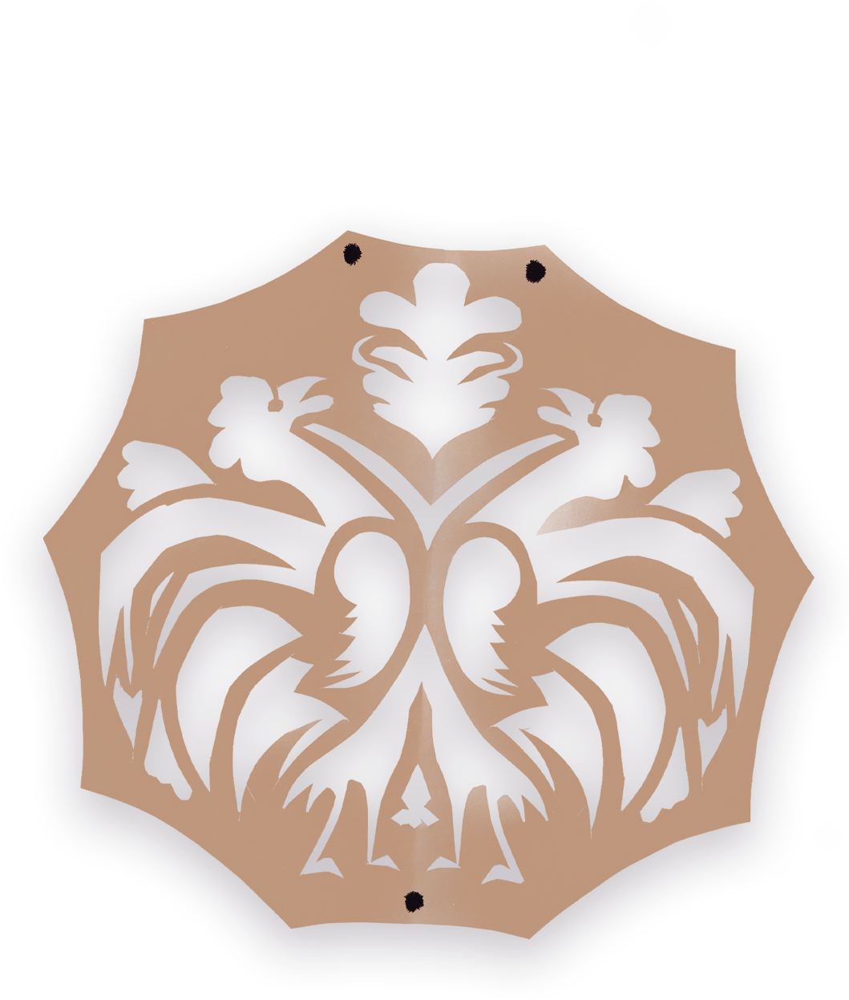
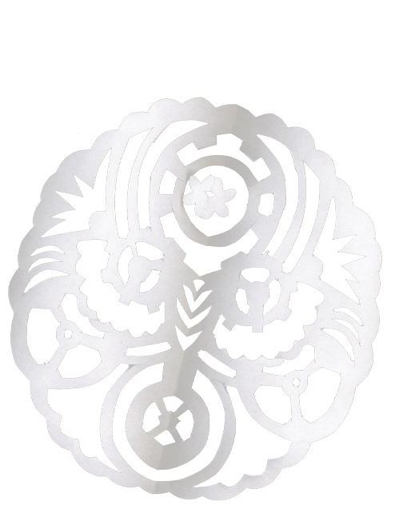

Dans les pages de Coppélia, tu as peut-être aperçu de petits découpages de papier, ce sont des "wycinanki" (prononce: vé-tchi-nan-ki), tout droit venus de Pologne! C'est un art populaire ancien pratiqué surtout à la campagne. À l'origine, les paysans les fabriquaient pour décorer leurs maisons, surtout les jours de fête.
Ces découpages sont faits avec des ciseaux ou un petit couteau très fin. On plie souvent le papier avant de le couper, un peu comme pour faire des flocons de neige. Le résultat? Des formes pleines de détails : des fleurs, des oiseaux, des arbres, parfois même des scènes de danse ou de village.
Chaque région de Pologne a son propre style de wycinanki. Certains sont très colorés, d'autres tout en noir et blanc. Mais tous sont pleins de poésie et montrent la richesse des traditions polonaises.
 à toi d'en réaliser une !